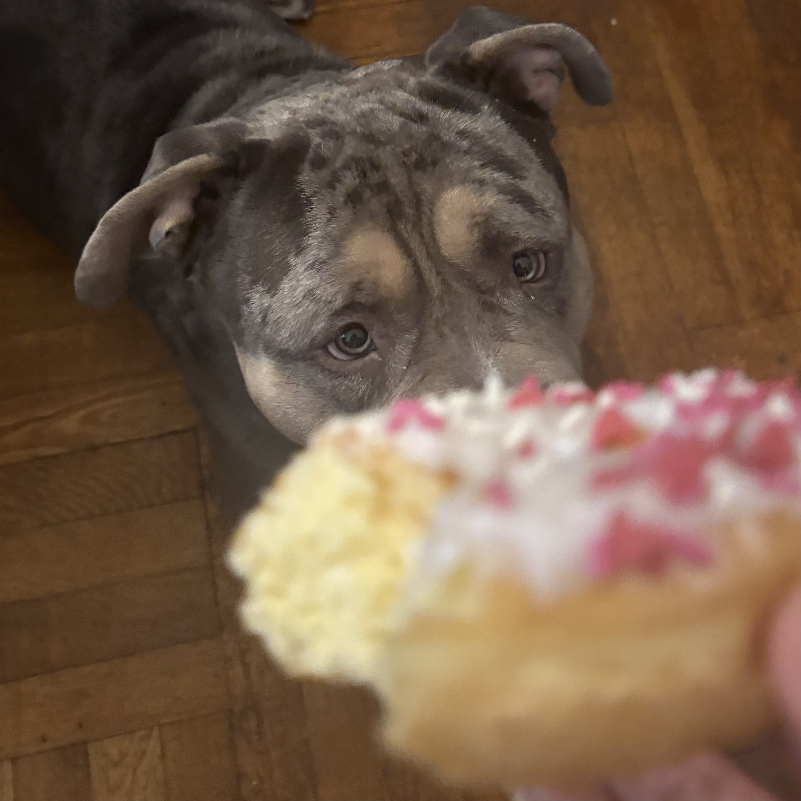
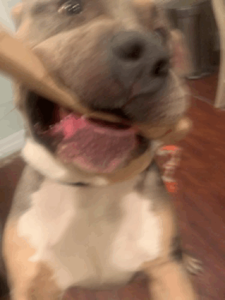

Invitation to...
Smoke's Third Birthday Party!!!

What to Get Him
You can buy smoke plenty of dog toys and treats for him to enjoy,
but here are some examples of his favorite things.
Hankercheifs to wear around his neck
Pillows
A toy with a squeaker inside it
If you buy something that Sire Smoke doesnt like he will be kinda mad idk fs tho
